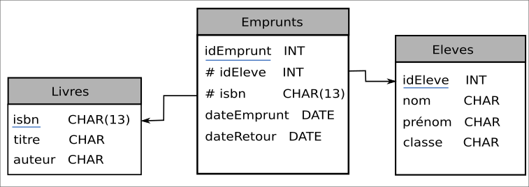

Langage SQL#
Le langage majoritairement utilisé dans les SGBD est le SQL acronyme de Structured Query Language.
Ce langage permet de réaliser des requêtes sur les relations d’une base de données pour en extraire les données qu’elles contient.
Le langage SQL utilise des clauses qui permettent:
la sélection de données avec la clause
SELECT. Elle peut être accompagnée des clausesDISTINCT,WHEREetORDER BYpour affiner la recherche;L’ajout de données dans une relation avec la clause
INSERT INTO;La mise à jour ou la modification d’une donnée avec la clause
UPDATE;La suppression d’un enregistrement d’une relation avec la clause
DELETE.
Note
Une requête SQL se termine par un point-virgule. Dans un client en console, la saisie du point virgule déclenche la requête.
Une requête SQL peut s’écrire sur plusieurs lignes.
Les clause présentées ci-dessus sont des clauses importantes mais il en existe beaucoup d’autres qui permettent de créer des relation, supprimer des relations, etc.
Clause SELECT … FROM#
La clause SELECT ... FROM réalise la sélection de données dans une relation:
SELECT attribut1, attribut2,... FROM relation;
Cette clause peut s’accompagner de la clause DISTINCT qui évite la redondance des données lorsque la requête
renvoie plusieurs fois les mêmes valeurs.
SELECT DISTINCT attribut1, attribut2,... FROM relation;
La sélection de tous les attributs d’une table peut se faire avec l’étoile \*:
SELECT * FROM relation;
La sélection peut être triée avec la clause ORDER BY, soit par ordre croissant avec la clause ASC ou par ordre
décroissant avec la clause DESC:
SELECT * FROM relation ORDER BY attribut ASC;
Clause SELECT … FROM … WHERE#
La clause WHERE impose une condition sur l”attribut à respecter dans la requête:
SELECT attribut(s) FROM relation WHERE condition(s);
Il est possible d’ajouter plusieurs conditions et utiliser les opérateurs logiques AND, OR et NOT.
Les principaux opérateurs utilisés dans les conditions sont rassemblés dans le tableau:
Opérateur |
Description |
Syntaxe |
|---|---|---|
= |
égal |
attribut = valeur |
\(<>\) ou != |
différent |
attribut <> valeur |
\(>\) et \(<\) |
supérieur à et inférieur à |
attribut > valeur |
\(>=\) et \(<=\) |
supérieur ou égal à et inférieur ou égal à |
attribut >= valeur |
IN |
Liste de plusieurs valeurs possibles |
attribut IN (valeur1,va leur2,valeur3) |
BETWEEN |
Valeur comprise dans un intervalle donné |
attribut BETWEEN valeur1 AND valeur2 |
LIKE |
Recherche en spécifiant le début, milieu ou fin d’un mot |
attribut LIKE valeur |
IS NULL |
attribut de valeur nulle (vide) |
attribut IS NULL |
IS NOT NULL |
attribut de valeur non nulle (non vide) |
attribut IS NOT NULL |
Note
Plusieurs conditions sont possibles avec les opérateurs AND et OR;
La négation d’une condition se fait avec NOT.
Le caractère % s’utilise avec l’opérateur LIKE et signifie toute chaine de caractères.
Par exemple, pour tous les mots qui commençent par ch, on note
LIKE ch%.
Exemples avec la clause WHERE
On considère une relation auteur avec les 2 attributs nom et année (de naissance).
On recherche les noms des auteurs nés en 1980.
SELECT nom FROM auteur WHERE année = 1980;
On recherche les noms des auteurs nés entre 1980 et 2000
SELECT nom FROM auteur WHERE année BETWEEN 1980 AND 2000;
On recherche les noms des auteurs qui commencent par la lettre « S »
SELECT nom FROM auteur WHERE nom LIKE 'S%';
On recherche les noms des auteurs qui finissent par la lettre « p »
SELECT nom FROM auteur WHERE nom LIKE '%p';
On recherche les noms des auteurs contenus dans la liste (« Rowling », »Vargas »)
SELECT nom FROM auteur WHERE nom IN ("Rowling","Vargas");
On recherche les noms des auteurs qui sont vides
SELECT nom FROM auteur WHERE nom IS NULL;
Les fonctions d’agrégation#
Les fonctions d’agrégation permettent d’effectuer quelques statistiques sur les relations d’une base de données. Les principales fonctions sont les suivantes :
AVG()pour calculer la moyenne des valeurs d’un attribut;COUNT()pour compter le nombre d’enregistrements sur une table ou un un attribut précisé;MAX()pour récupérer la valeur maximum d’un attribut sur un ensemble de ligne. Cela s’applique à la fois pour des données numériques ou alphanumériques;MIN()pour récupérer la valeur minimum de la même manière queMAX();SUM()pour calculer la somme de valeurs sur un ensemble d’enregistrements.
Ces fonctions se placent juste après la clause SELECT. La requête peut être soumise à condition(s) mais non obligatoire.
SELECT Fonction agrégation FROM relation WHERE condition(s);
Insérer des données#
La clause INSERT INTO ... VALUES ... ajoute un enregistrement (tuple) à une relation. Il faut indiquer le nom de la relation en précisant les attributs, entre parenthèses, et indiquer les valeurs à ajouter entre parenthèses.
INSERT INTO relation (attribut1, attribut2, ...) VALUES (valeur1, valeur2, ...);
Dans la même requête, il est possible d’ajouter plusieurs nouveaux enregistrements séparés par des virgules.
Exemples avec la clause INSERT INTO
On considère la relation auteur contenant les attributs nom, année et la clé primaire id_auteur.
Insertion de l’auteur « Rowling » née en 1965 :
INSERT INTO auteur (id_auteur, nom, année) VALUES (24,"Rowling", 1965);
Insertion des auteurs J. R. R. « Tolkien » né en 1892 et George R. R. « Martin » né en 1948:
INSERT INTO auteur (id_auteur, nom, année) VALUES (25,"Tolkien", 1892), (26,"Martin", 1948);
Note
Il n’est pas obligatoire de préciser les attributs mais il faut bien veiller à mettre les valeurs dans l’ordre des attributs de la relation.
On peut mettre les attributs dans un ordre différent en prenant soin de mettre les valeurs dans le même ordre.
Mettre à jour un enregistrement d’une relation#
La clause UPDATE permet de mettre à jour une relation en modifiant des valeurs. La requête doit préciser l’attribut à modifier avec sa nouvelle valeur et le même attribut avec son ancienne valeur sous la forme d’une condition.
La syntaxe est la suivante:
UPDATE relation SET attribut = nouvelle valeur WHERE attribut = ancienne valeur;
La condition n’est pas nécessairement une égalité stricte. Si la condition renvoie plusieurs enregistrements, ils seront tous mis à jour avec la nouvelle valeur.
Exemple de requête de mise à jour
On conserve la relation auteur pour laquelle on souhaite modifiée une année de naissance.
UPDATE auteur SET année = 2001 WHERE nom="Rowling";
Supprimer un enregistrement d’une relation#
La clause DELETE FROM supprime un enregistrement. Cette clause s’accompagne d’une condition pour déterminer les
enregistrements à supprimer. La requête SQL est exécutée sans demande de confirmation.
La syntaxe est la suivante:
DELETE FROM relation WHERE condition(s);
Exemple de suppression
On conserve la relation auteur pour laquelle on souhaite modifiée une année de naissance.
DELETE FROM auteur WHERE nom="Rowling";
Attention
Si la clause WHERE n’est pas donnée dans un DELETE, alors tous les enregistrements de la relation sont supprimés.
Les jointures en SQL#
Les données à recueillir peuvent se situées dans des relations différentes. Pour les obtenir, il est donc nécessaire de joindre les relations.
La clause JOIN permet de rassembler deux ou plusieurs relations à l’aide des clés étrangères.
La syntaxe est la suivante pour effectuer une jointure:
SELECT attribut(s) FROM relation1
JOIN relation2 ON relation1.clef_etrangere = relation2.clef_primaire;
Il est possible de joindre plusieurs relations:
SELECT attribut(s) FROM relation1
JOIN relation2 ON relation1.clef_etrangere = relation2.clef_primaire
JOIN relation3 ON relation2.clef_etrangere = relation3.clef_primaire;
Note
Les attributs appartiennent aux relations jointes et pas seulement la première relation indiquée.
Il est important de repérer les clés étrangères pour les relier aux clés primaires correspondantes.
Si les clés étrangères et primaires n’ont pas le même nom, il n’est pas utile de les préfixer par le nom des relations.
On peut également ajouter la clause
WHEREaux clausesJOIN.
Exemple de jointure
On considère la base de données selon le modèle relationnel suivant:
{kind=link}
On souhaite recueillir les titres des livres et les dates d’emprunts. Ces données sont dans deux relations différentes. Heureusement la table Emprunts dispose d’une clé étrangère la reliant à la relation Livres.
On réalise donc une jointure entre les tables Livres et Emprunts.
SELECT titre, dateEmprunt FROM Livres JOIN Emprunts ON Livres.isbn = Emprunt.isbn;
On peut soumettre cette recherche aux livres empruntés avant une date donnée.
SELECT titre, dateEmprunt FROM Livres JOIN Emprunts ON Livres.isbn = Emprunt.isbn WHERE dateEmprunt < 10012022;
On veut récupérer les noms des élèves qui n’ont pas encore rendu les livres empruntés. Il faut joindre la troisième relation Eleves avec la clef étrangère idEleve.
SELECT titre, dateEmprunt FROM Livres JOIN Emprunts ON Livres.isbn = Emprunt.isbn JOIN Eleves ON Eleves.idEleve = Livres.idEleve WHERE dateEmprunt < 10012022;